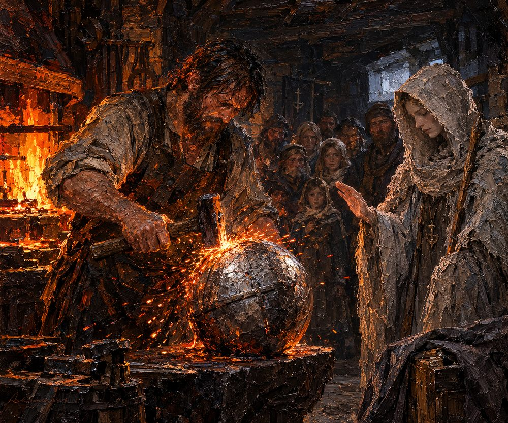

Record 8 of 15
The iron globe at Faldrun
At Faldrun a blacksmith hammers an iron globe on his anvil, and the Anchorite lays her hand above it and blesses it in Ardwen's name while the village watches.
In a firelit forge a bearded blacksmith swings a hammer at a glowing iron globe on an anvil in a shower of sparks, a hooded woman in grey raising one hand over it in blessing while a group of villagers watch from the shadows.